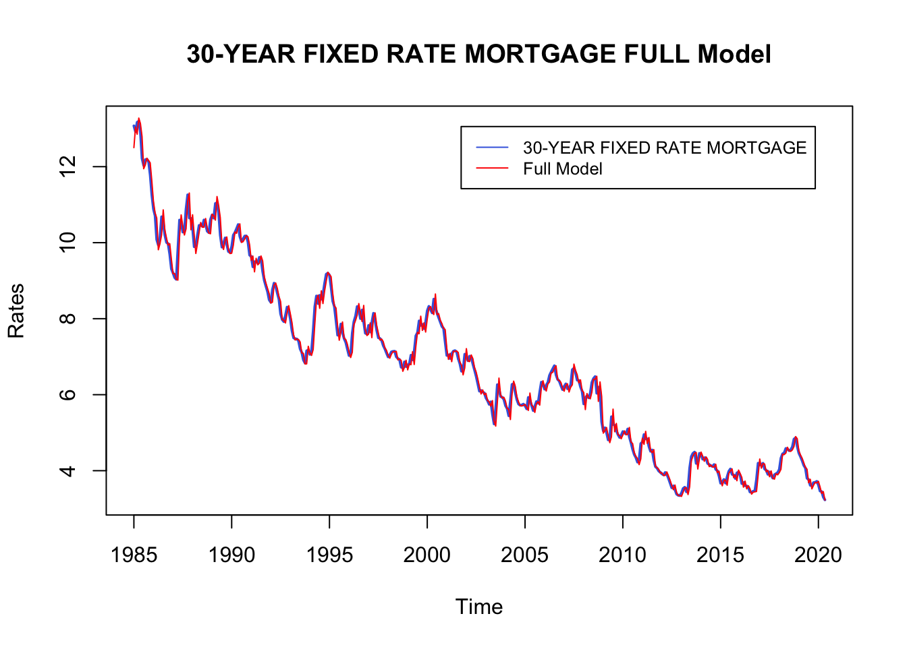
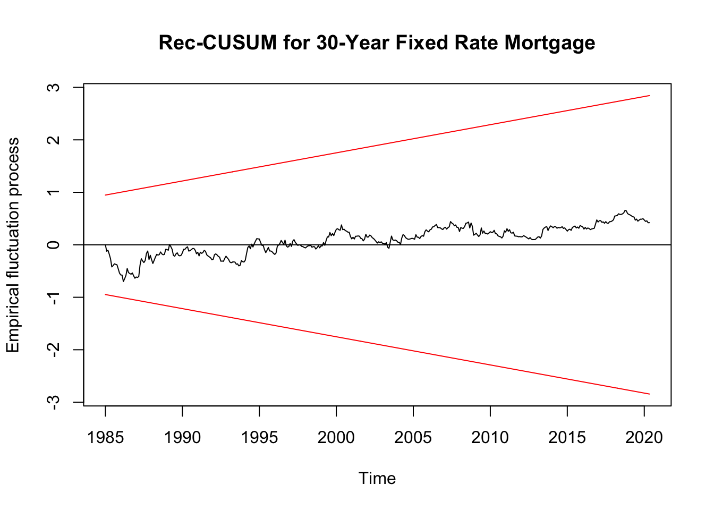
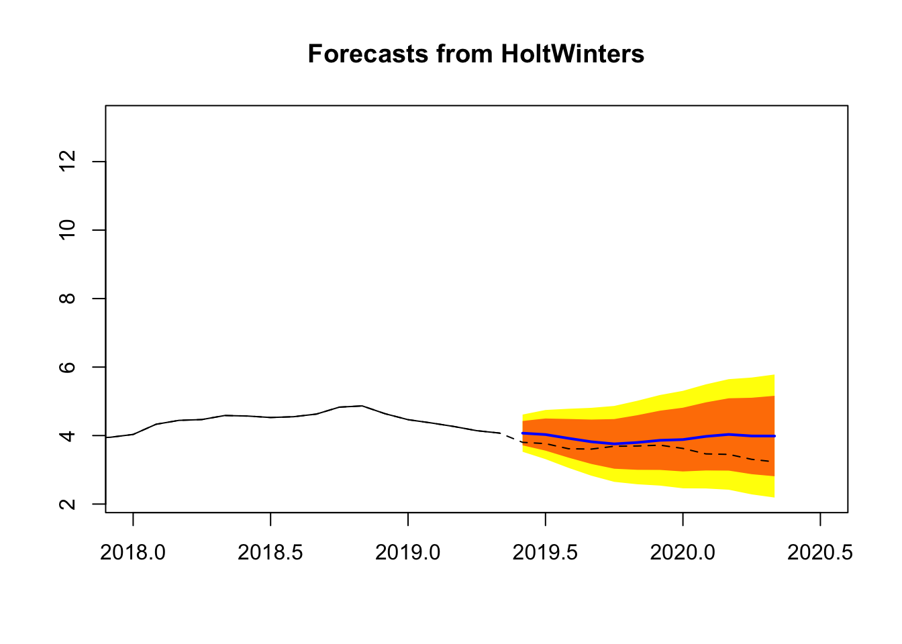
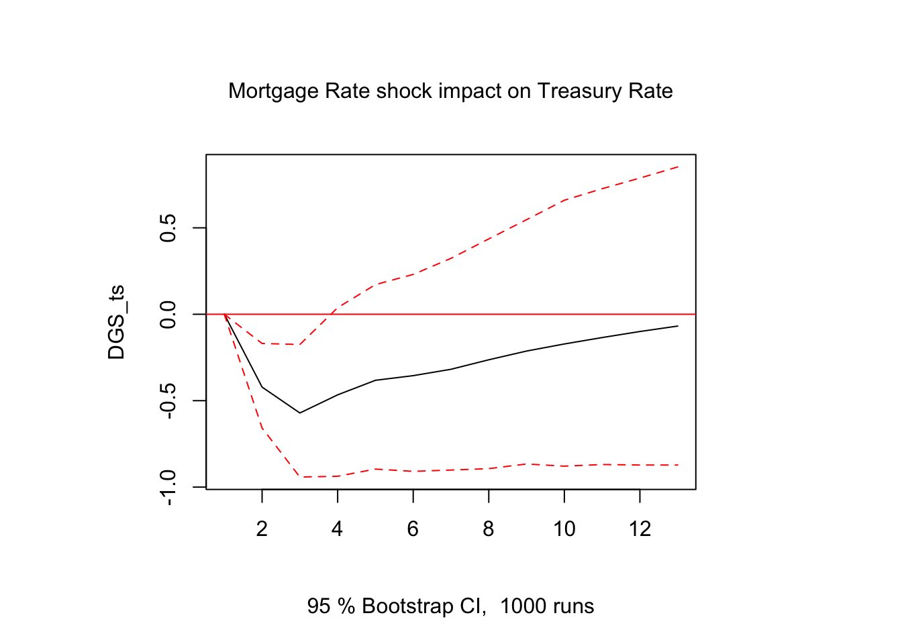
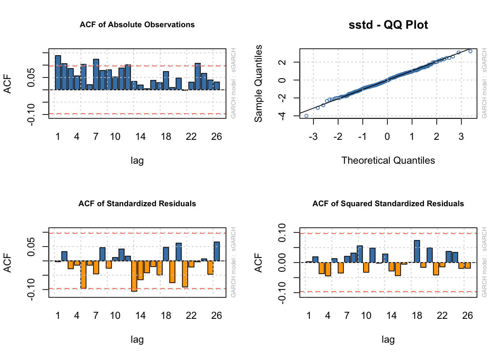

Project TSC
Xingyi Andrew, Si Miao and Zhiyuan Ren
5/30/2020
Load Libraries
library(lattice)
library(foreign)
library(MASS)
library(car)
require(stats)
require(stats4)
library(KernSmooth)
library(fastICA)
library(cluster)
library(mgcv)
library(rpart)
library(mgcv)
library(TTR)
require("datasets")
require(graphics)
library(forecast)
library(stats)
library(timeSeries)
library(fBasics)
library(tseries)
library(timsac)
library(TTR)
library(fpp)
library(strucchange)
library(vars)
library(lmtest)
library(dlnm)
library('KFAS')
library('FKF')
library(rugarch)
library(quantmod)
library(readxl)
library(ggplot2)
library(fpp2)
require(moments)Introduction
In this project, we choose to study 30 year mortgage rate and 10 year treasury constant maturity rate. Mortage rate is a primary consideration for homebuyers looking to finance a new home purchase with a mortgage loan. Treasury yeild is the return on investment on US government’s debt obligations, which influence the interest rate and can indicate the economic outlook. Additionally, these two rates are closely related. We pick data from 1985-01 to 2020-05 monthly. In this project, we firstly build models, trying to fit the trend, seasonality and cycle in each rate. Then we forecast the two rates using our model and other three different models. Finally, we studied the relationships between two rates.
Results
First, we get the monthly data, create a time series object and produce a time-series plot including the respective ACF and PACF plots.
#get the monthly data we need
data1 <- read_excel("MORTGAGE30US.xls")
data2 <- read_excel("DGS10.xls")#create a time series object
MORTGAGE_ts <- ts(data1$MORTGAGE30US, start = 1985, frequency = 12)
DGS_ts <- ts(data2$DGS10, start = 1985, frequency = 12)#plot the time-series plot
plot(MORTGAGE_ts, main="30-YEAR FIXED RATE MORTGAGE MONTHLY DATA",
xlab="Years", ylab = "Rates",
col = "blueviolet", lwd = 2)plot(DGS_ts, main="10-YEAR TREASURY CONSTANT MATURITY RATE DATA",
xlab="Years", ylab = "Rates",
col = "steelblue", lwd = 2)Now, we plot the respective ACF and PACF for 10-Year Treasury Constant Maturity Rate.
#ACF of 10-Year Treasury Constant Maturity Rate
acf(ts(DGS_ts, frequency = 1), lag = 60,
main="ACF of 10-Year Treasury Constant Maturity Rate Monthly Data")#PACF of 10-Year Treasury Constant Maturity Rate
pacf(ts(DGS_ts, frequency = 1), lag = 60,
main="PACF of 10-Year Treasury Constant Maturity Rate Monthly Data")We observe that there is a slow decay in ACF. The cyclical behavior in the ACF suggest that cycles are present as well. There are strong spikes at lag 1 and lag 2 in PACF and it decays to 0 in PACF.
We plot the respective ACF and PACF for 30-Year Fixed Rate Mortgage Monthly Data.
#ACF of 30-Year Fixed Rate Mortgage Monthly Data
acf(ts(MORTGAGE_ts, frequency = 1), lag = 60,
main="ACF of 30-Year Fixed Rate Mortgage Monthly Data")#PACF of 30-Year Fixed Rate Mortgage Monthly Data
pacf(ts(MORTGAGE_ts, frequency = 1), lag = 60,
main="PACF of 30-Year Fixed Rate Mortgage Monthly Data")We observe that there is slow decay in ACF. There is a strong spike in PACF and it decays to 0 in PACF.
Then, we fit a model that includes, trend, seasonality and cyclical components.
Since the monthly data for 30-Year Fixed Rate Mortgage has a downward trend and has fluctuations which indicates that the data is not coveraince stationary , then we take a look at the acf and pacf of the first difference.
#take first difference and look at the acf and pacf
tsdisplay(diff(MORTGAGE_ts))Taking the first difference to stablize the volatility, we observe that ACF has 1 strong spike and PACF has alternating patterns which decays to 0. Also, the dataplot has mean-reversion property. So, MA(1) will be a good fit for the time series. Also, we observe that in PACF, there are strong spikes at k = 1, 2, 21, 26, …, which indicates a seasonal model of AR(2) with frequency 12.
We fit a model for 30-year fixed rate mortgage monthly data and the model has a linear trend with ARMA(0,1,1) and seasonal AR(2) with frequency 12.
t <- seq(1985, 2020.41,length=length(MORTGAGE_ts))
t2 <- t^2
#construct a model with a linear trend, season and cyclical components
fit1 = Arima(MORTGAGE_ts,order=c(0,1,1), xreg=cbind(t),
seasonal=list(order=c(2,0,0)))
#plot the trending and seasona model
plot(MORTGAGE_ts ,main="30-YEAR FIXED RATE MORTGAGE FULL Model",
col = "royalblue", ylab = "Rates", lwd=2)
#add a fitted values line
lines(fitted(fit1),col="red")
#add the legend to the plot
legend("topright", inset = 0.05, col = c("royalblue", "red"),
legend=c("30-YEAR FIXED RATE MORTGAGE", "Full Model"),
cex = 0.8, lty=1:1)
From the plot above, the model seems a good fit for the data, but there are still some outliers.
Since the monthly data for 10-Year Treasury Constant Maturity Rate has a downward trend and has fluctuations over time which indicates that the data is not coveraince stationary, then we look at the acf and pacf of the first difference.
#take first difference and look at the acf and pacf
tsdisplay(diff(DGS_ts))Taking the first difference to stablize the volatility, we observe that ACF has strong spikes at k = 1, 14, 21,… and decays to 0 and PACF has three spikes. So, AR(3) will be a fit for the time series. Also, we observe that in PACF, there are strong spikes at k = 1, 2, 12, 21, 27,…, which indicates a seasonal model of AR(2) with frequency 12.
We fit a model for 10 Year treasury constant maturity rate monthly data and the model has a linear trend with ARMA(3,1,0) and a seasonal AR(2) with frequency 12.
#construct a model with trend, season and cyclical components
fit2 = Arima(DGS_ts,order=c(3,1,0), xreg = cbind(t), seasonal=list(order=c(2,0,0)))
#plot the trending and seasona; model
plot(DGS_ts ,main="10-YEAR TREASURY CONSTANT MATURITY RATE FULL Model",
col = "royalblue", ylab = "Rates", lwd=2)
#add a fitted values line
lines(fitted(fit2),col="red")
#add the legend to the plot
legend("topright", inset = 0.05, col = c("royalblue", "red"),
legend=c("10-YEAR TREASURY CONSTANT MATURITY RATE", "Full Model"),
cex = 0.8, lty=1:1)From the plot above, the model seems a good fit for the data, but there are some dynamics that the model does not capture.
We plot the respective residuals vs. fitted values for fit model 1 and 2.
#plot residuals vs. fitted values
plot(fitted(fit1),fit1$residuals,
main = "Residuals vs Fitted for 30-year Fixed Rate Mortgage")The range of residuals is very small and there are no outliers, so the model is a good fit for the 30-year fixed rate mortgage data.
#plot residuals vs. fitted values
plot(fitted(fit2),fit2$residuals,
main = "Residuals vs Fitted for 10-Year Treasury Rate")The range of residuals is very small and there are a few outliers, so the model is a good fit for 10-Year treasury constant maturity rate monthly data.
Now, we plot the ACF and PACF of the respective residuals for 30-Year fixed rate mortgage monthly data.
#plot ACF and PACF of the residuals for 30-Year fixed rate mortgage monthly data
acf(ts(fit1$residuals, freq=1),lag=60,
main="Residual ACF for 30-Year Fixed Rate Mortgage", xlab="Displacement")pacf(ts(fit1$residuals, freq=1),lag=60,
main="Residual PACF for 30-Year Fixed Rate Mortgage", xlab="Displacement")We find that there is a strong spike at k=1 in ACF and the rest of the lags decay to 0. In PACF, there are spikes at k=21 and 38 and the rest of lags are not statistically significant. The ACF and PACF of this model are much better than those of the original data. But, residuals of this model do not follow a white noise distribution since ACF indicates that there are some dynamics left. So, there are still improvement for the fit model for 30-Year fixed rate mortgage monthly data.
#plot ACF and PACF of the residuals for 10-Year Treasury Constant Maturity Rate
acf(ts(fit2$residuals, freq=1),lag=60,xlab="Displacement",
main="Residual ACF for 10-Year Treasury Constant Maturity Rate")pacf(ts(fit2$residuals, freq=1),lag=60, xlab="Displacement",
main="Residual PACF for 10-Year Treasury Constant Maturity Rate")We find that there is a strong spike at k=1 in ACF and the rest of the lags decay to 0. In PACF, almost all lags are not statistically significant.. The ACF and PACF of this model are much better than those of the original data. But, residuals of this model do not follow a white noise distribution since ACF indicates that there are some dynamics left. So, there are still improvement for the fit model of 10-Year treasury constant maturity rate monthly data.
Now, we plot the respective CUSUM.
#plot CUSUM for 30-Year Fixed Rate Mortgage
plot(efp(fit1$residuals ~ 1, type = "Rec-CUSUM"),
main = "Rec-CUSUM for 30-Year Fixed Rate Mortgage")
The model for 30-Year Fixed Rate Mortgage monthly data appears to be structurally fine. Everything is within the two bands and around 0, which indicates that the model does not break.
#plot CUSUM for 10-Year Treasury Constant Maturity Rate
plot(efp(fit2$residuals ~ 1, type = "Rec-CUSUM"),
main="Rec-CUSUM for 10-Year Treasury Constant Maturity Rate")The model for 10-Year Treasury Constant Maturity Rate monthly data appears to be structurally fine. Everything is within the two bands and around 0, which indicates that the fit model does not break.
To test if the model is a good fit for the chosen data, we plot the respective Recursive Residuals.
#take recursive residual of the model
y1 <- recresid(fit1$residuals ~ 1)
#plot recursive residual
plot(y1, pch = 1, ylab = "Recursive Residuals")We observe that the model does not have clear strcuture and residuals wander ramdomly around 0, which indicates that the model is a good fit.
#take recursive residual of the model
y2 <- recresid(fit2$residuals ~ 1)
#plot recursive residual
plot(y2, pch = 1, ylab = "Recursive Residuals")We see that the model does not have clear strcuture and residuals wander ramdonly around 0. But, there are some outliers.
We take a look at the diagnostic statistics for fit model 1.
#Diagnostic statistics for fit model 1
summary(fit1)## Series: MORTGAGE_ts
## Regression with ARIMA(0,1,1)(2,0,0)[12] errors
##
## Coefficients:
## ma1 sar1 sar2 t
## 0.4233 -0.0225 0.0323 -0.2828
## s.e. 0.0447 0.0494 0.0504 0.1598
##
## sigma^2 estimated as 0.03776: log likelihood=99.34
## AIC=-188.68 AICc=-188.53 BIC=-168.43
##
## Training set error measures:
## ME RMSE MAE MPE MAPE MASE
## Training set 0.001624703 0.1931747 0.1424283 0.0309574 2.16894 0.2131164
## ACF1
## Training set -0.02318207accuracy(fit1)## ME RMSE MAE MPE MAPE MASE
## Training set 0.001624703 0.1931747 0.1424283 0.0309574 2.16894 0.2131164
## ACF1
## Training set -0.02318207From the standard error, we see that all the parameters are more than 2 statndard deviation away from zero. So all parameters passed the t-test. The model also calculaes the variance of the error term contained in the model, which is very small. ME, RMSE, MAE, MPE, MASE, MAPE are small as well.
Let us check the normality of the residuals of our model for 30-Year Fixed Rate Mortgage. In the following figure the histograms of the residuals are shown, which does not reveal a serious deviation from normality. There are some outliers on the left tail.
#histogram from residuals of fit 1
truehist(fit1$residuals, col = "steelblue3", xlab = "Rate",
main = "30 Year Fixed Rate Mortgage")
lines(density(fit1$residuals), lwd = 2)We take a look at the diagnostic statistics for fit model 2.
#Diagnostic statistics for fit 2
summary(fit2)## Series: DGS_ts
## Regression with ARIMA(3,1,0)(2,0,0)[12] errors
##
## Coefficients:
## ar1 ar2 ar3 sar1 sar2 t
## 0.3493 -0.1967 0.1000 -0.0505 0.0008 -0.3007
## s.e. 0.0484 0.0506 0.0497 0.0504 0.0521 0.1669
##
## sigma^2 estimated as 0.05212: log likelihood=31.23
## AIC=-48.47 AICc=-48.2 BIC=-20.12
##
## Training set error measures:
## ME RMSE MAE MPE MAPE MASE
## Training set 0.001358565 0.2263998 0.1770295 -0.1342014 4.284279 0.2234138
## ACF1
## Training set 0.005130634accuracy(fit2)## ME RMSE MAE MPE MAPE MASE
## Training set 0.001358565 0.2263998 0.1770295 -0.1342014 4.284279 0.2234138
## ACF1
## Training set 0.005130634The model also calculaes the variance of the error term contained in the model, which is very small. ME, RMSE, MAE, MPE, MASE, MAPE are small as well.
Let us check the normality of the residuals of our model for10-Year Treasury Constant Maturity Rate. In the following figure the histograms of the residuals are shown, there are some outliers on the left tail which shows that the distribution has a heavy left tail.
#histogram from residuals of fit 2
truehist(fit2$residuals, col = "steelblue3", xlab = "Rate",
main = "10-Year Treasury Constant Maturity Rate")
lines(density(fit2$residuals), lwd = 2)We forecast 12 steps ahead for 30 Year Fixed Rate Mortgage using fit model 1. We divide observations into two sets: traning set and testing set. We reserve 12 observations for the testing set, so we constrcut the training set.
t1 <- seq(2019.33, 2020.33, length = 12)
#reserve 12 observations for the testing set, so we constrcut the training set
train_mort <- window(MORTGAGE_ts, end=c(2019,5))
train_mort_fit <- Arima(train_mort,order=c(0,1,1),xreg=cbind(time(train_mort)),
seasonal=list(order=c(2,0,0)))
fit1_full <- forecast(train_mort_fit, xreg=t1, h=12)
plot(fit1_full, shadecols="oldstyle", xlim=c(2018,2020.5))
lines(MORTGAGE_ts, lty=2)From the plot above, we see that the 12 step forecast for 30 Year Fixed Rate Mortgage has a downward trend and it is pretty close to the real data (black dash line) from May 2019 to May 2020. Therefore, the forecast is pretty good.
We forecast 12 steps ahead for 10 Year Treasury Constant Maturity Rate using fit model 2.
#reserve 12 observations for the testing set, so we constrcut the training set
train_dgs <- window(DGS_ts, end=c(2019,5))
train_dgs_fit <- Arima(train_dgs,order=c(3,1,0),xreg = cbind(time(train_dgs)),
seasonal=list(order=c(2,0,0)))
fit2_full <- forecast(train_dgs_fit, xreg=t1, h=12)
plot(fit2_full, shadecols="oldstyle", xlim=c(2018,2020.5))
lines(DGS_ts, lty=2)From the plot above, we see that the 12 step forecast for 10 Year Treasury Constant Maturity Rate has a downward trend and it is pretty close to the real data (black dash line) from May 2019 to May 2020. Although the forecast does not exhibit the fluctuations of the future data, the forecast still does a good job.
Compare the forecast above to the 12-steps ahead forecasts from ARIMA, Holt-Winters, and ETS models. Which model performs best in terms of MAPE ?
First, we perform 12 steps forecast for 30 Year Fixed Rate Mortgage.
#constrcut three forecast models
#12 step forecast with ARIMA model
arima_mortgage <- forecast(auto.arima(train_mort), h=12)
#12 step forecast with HoltWinters model
hw_mortgage <- forecast(HoltWinters(train_mort), h=12)
#12 step forecast with ETS model
ets_mortgage <- forecast(ets(train_mort), h=12)
#plot the 12 step forecast for each method
#plot 12 step forecast with ARIMA model
plot(arima_mortgage, xlim=c(2018,2020.5), shadecols="oldstyle")
lines(MORTGAGE_ts, lty=2)#plot 12 step forecast with HoltWinters model
plot(hw_mortgage, xlim=c(2018,2020.5), shadecols="oldstyle")
lines(MORTGAGE_ts, lty=2)
#plot 12 step forecast with ETS model
plot(ets_mortgage, xlim=c(2018,2020.5), shadecols="oldstyle")
lines(MORTGAGE_ts, lty=2)For 30 Year Fixed Rate Mortgage Monthly data, the 12 step forecast with ARIMA model is a flat line, but the original data exhibits a downward trend. The 12 step forecast with Holt-Winters model is close to the original data. The 12 step forecast with ETS model has a downward trend and close to the original data.
Now, we perform 12 steps forecast for 10 Year Treasury Constant Maturity Rate.
#constrcut three forecast models
#12 step forecast with ARIMA model
arima_dgs <- forecast(auto.arima(train_dgs), h=12)
#12 step forecast with HoltWinters model
hw_dgs <- forecast(HoltWinters(train_dgs), h=12)
#12 step forecast with ETS model
ets_dgs <- forecast(ets(train_dgs), h=12)
#plot the 12 step forecast for each method
#plot 12 step forecast with ARIMA model
#plot 12 step forecast with ARIMA model
plot(arima_dgs, xlim=c(2018,2020.5), shadecols="oldstyle")
lines(DGS_ts, lty=2)#plot 12 step forecast with HoltWinters model
plot(hw_dgs, xlim=c(2018,2020.5), shadecols="oldstyle")
lines(DGS_ts, lty=2)#plot 12 step forecast with ETS model
plot(ets_dgs, xlim=c(2018,2020.5), shadecols="oldstyle")
lines(DGS_ts, lty=2)Now we test and compare each model’s MAPE for 30 Year Fixed Rate Mortgage.
accuracy(arima_mortgage, MORTGAGE_ts)## ME RMSE MAE MPE MAPE
## Training set -0.01556973 0.1934500 0.1440713 -0.2278021 2.172453
## Test set -0.48722043 0.5217659 0.4872204 -13.9012130 13.901213
## MASE ACF1 Theil's U
## Training set 0.2179605 -0.004622745 NA
## Test set 0.7370987 0.646879113 6.05274accuracy(hw_mortgage, MORTGAGE_ts)## ME RMSE MAE MPE MAPE MASE
## Training set 0.02610472 0.2782027 0.2062792 0.2827213 3.081313 0.3120726
## Test set -0.34592286 0.4099362 0.3459229 -9.9645610 9.964561 0.5233346
## ACF1 Theil's U
## Training set 0.4111762 NA
## Test set 0.7386434 4.771183accuracy(ets_mortgage, MORTGAGE_ts)## ME RMSE MAE MPE MAPE
## Training set -0.01279098 0.2072812 0.1524859 -0.1834946 2.273543
## Test set -0.35160615 0.3792366 0.3516061 -10.0384495 10.038449
## MASE ACF1 Theil's U
## Training set 0.2306905 0.2098340 NA
## Test set 0.5319326 0.6145615 4.383889For 30 Year Fixed Rate Mortgage, comparing their MAPE of test set, we found that the Holt-Winters model has the lowest MAPE. So, the Holt-Winters model performs best.
Now we test and compare each model’s MAPE for 10 Year Treasury Constant Maturity Rate.
accuracy(arima_dgs, DGS_ts)## ME RMSE MAE MPE MAPE
## Training set -0.02438475 0.2248843 0.1767625 -0.5765634 4.02730
## Test set -0.85069558 0.9875079 0.8506956 -83.3723657 83.37237
## MASE ACF1 Theil's U
## Training set 0.2272764 -0.02615303 NA
## Test set 1.0938007 0.69205442 6.45087accuracy(hw_dgs, DGS_ts)## ME RMSE MAE MPE MAPE
## Training set 0.03183573 0.3256044 0.2451091 0.3433914 5.631893
## Test set -0.56751421 0.8009520 0.5675142 -63.7209031 63.720903
## MASE ACF1 Theil's U
## Training set 0.3151545 0.4877746 NA
## Test set 0.7296940 0.7310336 5.72186accuracy(ets_dgs, DGS_ts)## ME RMSE MAE MPE MAPE
## Training set -0.01273247 0.2365057 0.1834319 -0.3101076 4.129287
## Test set -0.74785747 0.8762241 0.7478575 -73.9452908 73.945291
## MASE ACF1 Theil's U
## Training set 0.2358517 0.1813952 NA
## Test set 0.9615743 0.6860001 5.775347For 10 Year Treasury Constant Maturity Rate, comparing their MAPE of test set, we found that the Holt-Winters model has the lowest MAPE. So, the Holt-Winters model performs best.
Combine the four forecasts for 30 Year Fixed Rate Mortgage. The graph below shows Forecast for 30 Year Fixed Rate Mortgage from May 2019 to May 2020.
# combining multiple forecasts and using a simple average
Combination <- (ets_mortgage[["mean"]] + arima_mortgage[["mean"]] +
hw_mortgage[["mean"]]+ fit1_full[["mean"]])/4
autoplot(MORTGAGE_ts, color="black") +
autolayer(ets_mortgage, series="ETS", PI=FALSE) +
autolayer(arima_mortgage, series="ARIMA", PI=FALSE) +
autolayer(hw_mortgage, series="HW", PI=FALSE) +
autolayer(fit1_full, series="Fit", PI=FALSE) +
autolayer(Combination, series="Combination") +
xlab("Year") + ylab("Rates") +
ggtitle("12-steps Forecast for 30 Year Fixed Rate Mortgage") +
xlim(c(2010,2021)) +
ylim(c(0,8))## Scale for 'x' is already present. Adding another scale for 'x', which
## will replace the existing scale.We compare their MAPE and we observe that the Holt-Winters model has the lowest MAPE than other models, which indicates that the Holt-Winters model does a better job to forecast 12 steps ahead for 30 Year Fixed Rate Mortgage. ARIMA predicts the rate will increase, which has a different direction with the real data and other models.
#compute MAPE
c(ETS1 = accuracy(ets_mortgage, MORTGAGE_ts)["Test set","MAPE"],
ARIMA1 = accuracy(arima_mortgage, MORTGAGE_ts)["Test set","MAPE"],
HW1 = accuracy(hw_mortgage, MORTGAGE_ts)["Test set","MAPE"],
FIT1 = accuracy(fit1_full, MORTGAGE_ts)["Test set","MAPE"],
Combination =
accuracy(Combination, MORTGAGE_ts)["Test set","MAPE"])## ETS1 ARIMA1 HW1 FIT1 Combination
## 10.038449 13.901213 9.964561 10.189458 11.023420Combine the four forecasts for 10 Year Treasury Constant Maturity Rate. The graph below shows Forecast for 10 Year Treasury Constant Maturity Rate from May 2019 to May 2020.
# combining multiple forecasts and using a simple average
Combination2 <- (ets_dgs[["mean"]] + arima_dgs[["mean"]] +
hw_dgs[["mean"]]+ fit2_full[["mean"]])/4
autoplot(DGS_ts, color="black") +
autolayer(ets_dgs, series="ETS", PI=FALSE) +
autolayer(arima_dgs, series="ARIMA", PI=FALSE) +
autolayer(hw_dgs, series="HW", PI=FALSE) +
autolayer(fit2_full, series="Fit", PI=FALSE) +
autolayer(Combination2, series="Combination") +
xlab("Year") + ylab("Rates") +
ggtitle("12-steps Forecast for 10 Year Treasury Constant Maturity Rate") +
xlim(c(2010,2021)) +
ylim(c(0,8))## Scale for 'x' is already present. Adding another scale for 'x', which
## will replace the existing scale.We compare their MAPE and we observe that the combined forecast model has the lowest MAPE than other models, which indicates that the ombined forecast model does a better job to forecast 12 steps ahead for 10 Year Treasury Constant Maturity Rate. The direction of ARIMA model prediction is different from the real data. Combination, ETS and fit models have a relatively better prediction.
#compute MAPE
c(ETS2 = accuracy(ets_mortgage, DGS_ts)["Test set","MAPE"],
ARIMA2 = accuracy(arima_mortgage, DGS_ts)["Test set","MAPE"],
HW2 = accuracy(hw_mortgage, DGS_ts)["Test set","MAPE"],
FIT2 = accuracy(fit1_full, DGS_ts)["Test set","MAPE"],
Combination2 =
accuracy(Combination2, DGS_ts)["Test set","MAPE"])## ETS2 ARIMA2 HW2 FIT2 Combination2
## 201.42327 213.40913 203.35196 200.99280 72.40084We fit an appropriate VAR model using two variables.
#construct training and testing data
bind <- cbind(MORTGAGE_ts, DGS_ts)
data.ts <- ts(bind, start = 1985, end = c(2020, 5), freq = 12)
data.training.ts <- window(data.ts, start = 1985,end = c(2019, 5))
data.test.ts <- window(data.ts, start = c(2019,6),end = c(2020, 5))
autoplot(data.ts) + ggtitle("30-YEAR MORTGAGE RATE & 10-YEAR TREASURY RATE") +
ylab("Rates")From the plot above, these two series seem to move together over time. So, they may have some relationship, which indicates that treasury rates helps explain the mortgage.
We take a look at cross correlation.
#Cross Correlation function
ccf(ts(data.training.ts[,1], freq=1) ,ts(data.training.ts[,2], freq=1),
ylab="Cross-Correlation Function", main = "Mortgage and DGS CCF")We found that values of lags are positive, which means that mortgage lags DGS. Mortgage rates are maximally correlated with DGS lagged by 6 to 12 months.
Now we use VARselect to to choose optimal VAR model.
# Using VARselect, we determine what p (lag) minimizes AIC and BIC
VARselect(data.training.ts, lag.max = 10)## $selection
## AIC(n) HQ(n) SC(n) FPE(n)
## 4 3 2 4
##
## $criteria
## 1 2 3 4
## AIC(n) -7.4743674462 -7.7489682618 -7.7780455366 -7.7858894836
## HQ(n) -7.4507967599 -7.7096837847 -7.7230472686 -7.7151774248
## SC(n) -7.4148299292 -7.6497390667 -7.6391246635 -7.6072769325
## FPE(n) 0.0005674449 0.0004311883 0.0004188329 0.0004155637
## 5 6 7 8
## AIC(n) -7.7767619954 -7.7711888518 -7.7597632036 -7.7511805767
## HQ(n) -7.6903361457 -7.6690492113 -7.6419097723 -7.6176133545
## SC(n) -7.5584577662 -7.5131929446 -7.4620756183 -7.4138013134
## FPE(n) 0.0004193793 0.0004217305 0.0004265869 0.0004302774
## 9 10
## AIC(n) -7.7462157961 -7.7296473689
## HQ(n) -7.5969347831 -7.5646525651
## SC(n) -7.3691448548 -7.3128847496
## FPE(n) 0.0004324361 0.0004396822We observe that when p = 4, it minimize AIC and FPE, so we choose order = 4 for the optimal VAR model for 10 year treasury constant maturity rates.
varmodel = VAR(data.training.ts, p = 4)
summary(varmodel)##
## VAR Estimation Results:
## =========================
## Endogenous variables: MORTGAGE_ts, DGS_ts
## Deterministic variables: const
## Sample size: 409
## Log Likelihood: 445.651
## Roots of the characteristic polynomial:
## 0.9862 0.8989 0.5583 0.5412 0.5412 0.1797 0.1797 0.1771
## Call:
## VAR(y = data.training.ts, p = 4)
##
##
## Estimation results for equation MORTGAGE_ts:
## ============================================
## MORTGAGE_ts = MORTGAGE_ts.l1 + DGS_ts.l1 + MORTGAGE_ts.l2 + DGS_ts.l2 + MORTGAGE_ts.l3 + DGS_ts.l3 + MORTGAGE_ts.l4 + DGS_ts.l4 + const
##
## Estimate Std. Error t value Pr(>|t|)
## MORTGAGE_ts.l1 0.837831 0.098760 8.484 4.29e-16 ***
## DGS_ts.l1 0.538196 0.081757 6.583 1.45e-10 ***
## MORTGAGE_ts.l2 0.085435 0.151277 0.565 0.5726
## DGS_ts.l2 -0.608847 0.123363 -4.935 1.18e-06 ***
## MORTGAGE_ts.l3 0.005072 0.144620 0.035 0.9720
## DGS_ts.l3 0.143858 0.122547 1.174 0.2411
## MORTGAGE_ts.l4 0.007090 0.090012 0.079 0.9373
## DGS_ts.l4 -0.017813 0.081667 -0.218 0.8275
## const 0.139987 0.060530 2.313 0.0212 *
## ---
## Signif. codes: 0 '***' 0.001 '**' 0.01 '*' 0.05 '.' 0.1 ' ' 1
##
##
## Residual standard error: 0.1835 on 400 degrees of freedom
## Multiple R-Squared: 0.9935, Adjusted R-squared: 0.9934
## F-statistic: 7690 on 8 and 400 DF, p-value: < 2.2e-16
##
##
## Estimation results for equation DGS_ts:
## =======================================
## DGS_ts = MORTGAGE_ts.l1 + DGS_ts.l1 + MORTGAGE_ts.l2 + DGS_ts.l2 + MORTGAGE_ts.l3 + DGS_ts.l3 + MORTGAGE_ts.l4 + DGS_ts.l4 + const
##
## Estimate Std. Error t value Pr(>|t|)
## MORTGAGE_ts.l1 -0.42143 0.11848 -3.557 0.00042 ***
## DGS_ts.l1 1.64097 0.09808 16.730 < 2e-16 ***
## MORTGAGE_ts.l2 0.47344 0.18149 2.609 0.00943 **
## DGS_ts.l2 -0.80545 0.14800 -5.442 9.19e-08 ***
## MORTGAGE_ts.l3 -0.02881 0.17350 -0.166 0.86821
## DGS_ts.l3 0.22512 0.14702 1.531 0.12651
## MORTGAGE_ts.l4 -0.01461 0.10799 -0.135 0.89246
## DGS_ts.l4 -0.08020 0.09798 -0.819 0.41350
## const 0.02512 0.07262 0.346 0.72958
## ---
## Signif. codes: 0 '***' 0.001 '**' 0.01 '*' 0.05 '.' 0.1 ' ' 1
##
##
## Residual standard error: 0.2201 on 400 degrees of freedom
## Multiple R-Squared: 0.9909, Adjusted R-squared: 0.9907
## F-statistic: 5429 on 8 and 400 DF, p-value: < 2.2e-16
##
##
##
## Covariance matrix of residuals:
## MORTGAGE_ts DGS_ts
## MORTGAGE_ts 0.03366 0.03500
## DGS_ts 0.03500 0.04844
##
## Correlation matrix of residuals:
## MORTGAGE_ts DGS_ts
## MORTGAGE_ts 1.0000 0.8668
## DGS_ts 0.8668 1.0000The regression results for VAR(4) model equation 1: \(mortgage = c + mortgage_{t-k} + dgs_{t-k}\), where k = 1, 2, 3, 4.
The regression results for VAR(4) model equation 2: \(dgs = c + mortgage_{t-k} + dgs_{t-k}\), where k = 1, 2, 3, 4.
We compute the respective impulse response functions.
#Estimate the IRFs
response_1 <- irf(varmodel, impulse = "MORTGAGE_ts",
response = "MORTGAGE_ts", n.ahead = 12,
ortho = FALSE, runs = 1000)
response_2 <- irf(varmodel, impulse = "DGS_ts",
response = "MORTGAGE_ts", n.ahead = 12,
ortho = FALSE, runs = 1000)
response_3 <- irf(varmodel, impulse = "DGS_ts",
response = "DGS_ts", n.ahead = 12,
ortho = FALSE, runs = 1000)
response_4 <- irf(varmodel, impulse = "MORTGAGE_ts",
response = "DGS_ts", n.ahead = 12,
ortho = FALSE, runs = 1000)Then, plot respective impulse response functions.
First, we plot respective impulse response function for mortgage rate shock to itself.
plot(response_1, main = "Mortgage Rate shock to itself")In each graph, there are 95% confidence bands (red dotted lines). If 0 is within the bands, we will consider that the response is statistically zero. From the above graph, the effect of mortgage’s shock on subsequent mortgage: initially a large effect but then decays to reach the minimum around 4 months, then it decays slowly and the response is statistically zero.
Second, we plot respective impulse response function for Treasury Rate shock impact on Mortgage Rate.
plot(response_2, main = "Treasury Rate shock impact on Mortgage Rate")Effect of treasury rates shock on subsequent mortgage rates: initially produces no movement, then it builds up, peaking around 4 months and it is a positive impact. It seems that a Treasury Rate shock effects the Mortgage Rate for longer periods.
Third, we plot respective impulse response function for Treasury Rate shock impact on itself.
plot(response_3, main = "Treasury Rate shock impact on itself")Effect of treasury rates shock on subsequent treasury rates: initially a large effect, then it builds up, peaking around 3 months and it is a positive impact, then it decays slowly.
Fourth, we plot respective impulse response function for Mortgage Rate shock impact on Treasury Rate.
plot(response_4, main = "Mortgage Rate shock impact on Treasury Rate")
Effects of mortgage rate shock impact on treasury rate: produces initially no movement, then it reaches its minimum around March and it is a negative impact; then it builds up slowly and lives for only 3 months.
In order to test if Mortgage granger causes DGS, we perform a Granger-Causality test.
\(H_0:\) Mortgage does not granger cause DGS.
#H0: Mortgage do not cause DGS
grangertest(data.training.ts[, 2] ~ data.training.ts[, 1], order = 2)## Granger causality test
##
## Model 1: data.training.ts[, 2] ~ Lags(data.training.ts[, 2], 1:2) + Lags(data.training.ts[, 1], 1:2)
## Model 2: data.training.ts[, 2] ~ Lags(data.training.ts[, 2], 1:2)
## Res.Df Df F Pr(>F)
## 1 406
## 2 408 -2 12.991 3.4e-06 ***
## ---
## Signif. codes: 0 '***' 0.001 '**' 0.01 '*' 0.05 '.' 0.1 ' ' 1Since the p-value is very small and statistically significant, then we reject \(H_0:\) Mortgage do not granger cause DGS. So, we conclude that Mortgage granger causes DGS.
\(H_0\): DGS does not granger cause Mortgage.
#H0: DGS do not cause Mortgage
grangertest(data.training.ts[, 1] ~ data.training.ts[, 2], order = 2)## Granger causality test
##
## Model 1: data.training.ts[, 1] ~ Lags(data.training.ts[, 1], 1:2) + Lags(data.training.ts[, 2], 1:2)
## Model 2: data.training.ts[, 1] ~ Lags(data.training.ts[, 1], 1:2)
## Res.Df Df F Pr(>F)
## 1 406
## 2 408 -2 30.436 4.827e-13 ***
## ---
## Signif. codes: 0 '***' 0.001 '**' 0.01 '*' 0.05 '.' 0.1 ' ' 1Since the p-value is very small and statistically significant, then we reject \(H_0:\) DGS do not granger cause Mortgage. So, we conclude that DGS granger causes Mortgage.
Use VAR(4) model to forecast 12 steps ahead for 30 year fixed rate mortgage.
#predict using var model for 12 steps for 30 year fixed rate mortgage
var.predict = predict(object = varmodel, n.ahead = 12)
#point forecast
MORTGAGE_predict <- ts(var.predict$fcst$MORTGAGE_ts[,1],
start = length(as.numeric(data.training.ts[,1])) + 1,
freq = 1)
#upper bound
MORTGAGE_predict_upper <- ts(var.predict$fcst$MORTGAGE_ts[,3],
start = length(as.numeric(data.training.ts[,1])) + 1,
freq = 1)
#lower bound
MORTGAGE_predict_lower <- ts(var.predict$fcst$MORTGAGE_ts[, 2],
start = length(as.numeric(data.training.ts[,1])) + 1,
freq = 1)
#plot VAR Model forecast
plot(as.numeric(data.ts[, 1]), type = "l", xlim=c(390,435),ylim=c(0,8),
main="VAR Model Forecast for 30 Year Fixed Rate Mortgage")
lines(MORTGAGE_predict, col = "red")
#add error bands
lines(MORTGAGE_predict_upper, col = "blue")
lines(MORTGAGE_predict_lower, col = "blue")VAR model indicates that 30 year fixed rate mortgage will increase over time with a flat smooth line, which has the same direction with ARIMA forecast. Compared to the rest of models, VAR does not forecast well since the other models except ARIMA have a better prediction than VAR. Also, compared to the real data, VAR model has a different direction. So, VAR model still need some improvement.
Use VAR(4) model to forecast 12 steps ahead for 10 year treasury constant maturity rate.
#predict using var model for 12 steps for 10 year treasury constant maturity rate
DGS_predict <- ts(var.predict$fcst$DGS_ts[,1],
start = length(as.numeric(data.training.ts[, 2])) + 1, freq = 1)
#upper bound
DGS_predict_upper <- ts(var.predict$fcst$DGS_ts[,3],
start = length(as.numeric(data.training.ts[,2])) + 1,
freq = 1)
#lower bound
DGS_predict_lower <- ts(var.predict$fcst$DGS_ts[, 2],
start = length(as.numeric(data.training.ts[,2])) + 1,
freq = 1)
#plot VAR Model forecast
plot(as.numeric(data.ts[, 2]), type = "l", xlim=c(400,440), ylim=c(0,8),
main="VAR Model Forecast 10 Year Treasury Constant Maturity Rate")
lines(DGS_predict, col = "red")
#add error bands
lines(DGS_predict_upper, col = "blue")
lines(DGS_predict_lower, col = "blue")VAR model indicates that 10 year treasury constant maturity rate will increase over time with a flat smooth line, which has the same direction with ARIMA forecast. Compared to the rest of models, VAR does not forecast well since the other models except ARIMA have a better prediction than VAR. Also, compared to the real data, VAR model has a different direction. So, VAR model still need some improvement.
Now, we try to fit a GARCH model to the residuals from your favorite model, and produce a new 12-steps ahead forecast, including one for the variance.
We choose our fit model to fit a GARCH model to the residuals for mortgage data.
First, we display the residuals of morgage data.
#the residuals of morgage data
tsdisplay(train_mort_fit$residuals)
We found that the residuals of mortgage data have mean-reversion property and also their ACF and PACF are pretty much statistically insignificant except for lag 21 in both ACF and PACF.
We fit a GARCH(2,2) model to 30 year fixed rate morgage. So, our choice of variance model: \(\sigma^2_{t|t-1}=w+\alpha_1 \varepsilon_{t-1}+\alpha_2 \varepsilon_{t-2}+\beta_1 \sigma^2_{t-1|t-2}+\beta_2 \sigma^2_{t-2|t-3}\).
The mean model is chosen to be ARMA(2,2) since our model : \(r_t=\mu+\theta_1(y_{t-1})+\theta_2(y_{t-2})+\alpha_1\varepsilon_{t-1}+\alpha_2\varepsilon_{t-2}+\varepsilon_{t}\), where \(\varepsilon_{t}=\sigma_tz_t\) and \(z_t\sim N(0,1)\).
#construct the model
model1=ugarchspec(
variance.model = list(model = "sGARCH", garchOrder = c(2, 2)),
mean.model = list(armaOrder = c(2, 2), include.mean = TRUE),
distribution.model = "sstd")
#take a look at parameters of the GARCH model
model1@model$pars## Level Fixed Include Estimate LB UB
## mu 0 0 1 1 NA NA
## ar1 0 0 1 1 NA NA
## ar2 0 0 1 1 NA NA
## ma1 0 0 1 1 NA NA
## ma2 0 0 1 1 NA NA
## arfima 0 0 0 0 NA NA
## archm 0 0 0 0 NA NA
## mxreg 0 0 0 0 NA NA
## omega 0 0 1 1 NA NA
## alpha1 0 0 1 1 NA NA
## alpha2 0 0 1 1 NA NA
## beta1 0 0 1 1 NA NA
## beta2 0 0 1 1 NA NA
## gamma 0 0 0 0 NA NA
## eta1 0 0 0 0 NA NA
## eta2 0 0 0 0 NA NA
## delta 0 0 0 0 NA NA
## lambda 0 0 0 0 NA NA
## vxreg 0 0 0 0 NA NA
## skew 0 0 1 1 NA NA
## shape 0 0 1 1 NA NA
## ghlambda 0 0 0 0 NA NA
## xi 0 0 0 0 NA NANow, we fit the GARCH(2,2) model with mean model ARMA(2,2) to the mortgage data and we plot the conditional volatility for the mortgage data.
#fit the garch model to the data
modelfit1 = ugarchfit(spec=model1,data=train_mort_fit$residuals)
#plot the conditional sd
plot(modelfit1, which = 3)Generate a panel of plots to see if the GARCH model is a good fit for the residuals of mortgage data.
#generate a panel of plots to see if the GARCH model is a good fit
par(mfrow = c(2, 2))
plot(modelfit1, which = 6)
plot(modelfit1, which = 9)
plot(modelfit1, which = 10)
plot(modelfit1, which = 11)par(mfrow = c(1, 1))From the first graph above, ACF of absolute observations indicates some volatility clustering. From the QQ plot, there are a few outliers from both left and right tails. Also, we can see that ACF of standaridized residuals and ACF of squared standaridized residuals are all within the band, indicating that the residuals are white noise and the model seems a good fit.
We use ARMA(2,2) GARCH(2,2) to forecast 12 steps ahead for mortgage data.
#forecast 12 steps ahead
modelfor1 = ugarchforecast(modelfit1, data = NULL, n.ahead = 12, n.roll = 0, out.sample = 0)
#forecast 12 steps ahead and plot the original series(residuals)
plot(modelfor1, which = 1)#forecast 12 steps ahead unconditional volatility
plot(modelfor1, which =3)
GARCH model predicts that the original series(residuals of 30 year fixed rate mortgage) will flatten out in the next 12 months. GARCH model predicts the unconditional volatility of the residuals of 30 year fixed rate mortgage initially decreases, fluctuates, then it increases at a faster pace and it has an increasing trend. So, GARCH model predicts the volatility has an overall increasing trend.
We choose our fit model to fit a GARCH model to the residuals for treasury rate data.
First, we display the residuals of treasury rate data.
tsdisplay(train_dgs_fit$residuals)We found that the residuals of treasury rate data have mean-reversion property and also their ACF and PACF are pretty much statistically insignificant except for lag 14, 15 and 21 in both ACF and PACF.
We fit a GARCH(2,2) model to 10 year maturity treasury rate. So, our choice of variance model: \(\sigma^2_{t|t-1}=w+\alpha_1 \varepsilon_{t-1}+ \alpha_2 \varepsilon_{t-2}+\beta_1 \sigma^2_{t-1|t-2}+\beta_2 \sigma^2_{t-2|t-3}\).
The mean model is chosen to be ARMA(1,1) since our model : \(r_t=\mu+\phi_1 y_{t-1}+\alpha_1\varepsilon_{t-1}+\varepsilon_{t}\), where \(\varepsilon_{t}=\sigma_t z_t\) and \(z_t\sim N(0,1)\).
#forecast the return squared
#construct the model
model2=ugarchspec(
variance.model = list(model = "sGARCH", garchOrder = c(2, 2)),
mean.model = list(armaOrder = c(1, 1), include.mean = TRUE),
distribution.model = "sstd")
#take a look at parameters of the GARCH model
model2@model$pars## Level Fixed Include Estimate LB UB
## mu 0 0 1 1 NA NA
## ar1 0 0 1 1 NA NA
## ma1 0 0 1 1 NA NA
## arfima 0 0 0 0 NA NA
## archm 0 0 0 0 NA NA
## mxreg 0 0 0 0 NA NA
## omega 0 0 1 1 NA NA
## alpha1 0 0 1 1 NA NA
## alpha2 0 0 1 1 NA NA
## beta1 0 0 1 1 NA NA
## beta2 0 0 1 1 NA NA
## gamma 0 0 0 0 NA NA
## eta1 0 0 0 0 NA NA
## eta2 0 0 0 0 NA NA
## delta 0 0 0 0 NA NA
## lambda 0 0 0 0 NA NA
## vxreg 0 0 0 0 NA NA
## skew 0 0 1 1 NA NA
## shape 0 0 1 1 NA NA
## ghlambda 0 0 0 0 NA NA
## xi 0 0 0 0 NA NANow, we fit the GARCH(2,2) model with mean model ARMA(1,1) to the mortgage data and we plot the conditional volatility for the mortgage data.
#fit a garch model
modelfit2 = ugarchfit(spec=model2,data=train_dgs_fit$residuals)
plot(modelfit2, which=3)Generate a panel of plots to see if the GARCH model is a good fit for the mortgage data.
#generate a panel of plots to see if the GARCH model is a good fit
par(mfrow = c(2, 2))
plot(modelfit2, which = 6)
plot(modelfit2, which = 9)
plot(modelfit2, which = 10)
plot(modelfit2, which = 11)
par(mfrow = c(1, 1))From the first graph above, ACF of absolute observations decays very slowly, which indicates some volatility clustering. From the QQ plot, there are several outliers from both left and right tails. Also, we can see that ACF of standaridized residuals and ACF of squared standaridized residuals are almost all within the band, indicating that the residuals maybe follow white noise and the model seems a good fit.
We use ARMA(1,1) GARCH(2,2) to forecast 12 steps ahead for mortgage data.
#forecast 12 steps ahead
modelfor2 = ugarchforecast(modelfit2, data = NULL, n.ahead = 12, n.roll = 0, out.sample = 0)
#forecast 12 steps ahead unconditional volatility
plot(modelfor2, which = 1)plot(modelfor2, which = 3)GARCH model predicts that the original series (residuals of 30 year fixed rate mortgage) will flatten out in the next 12 months. GARCH model predicts the unconditional volatility of the residuals of the 10 year treasury constant maturity rate fluctuates oevr time and has an increasing trend.
Conclusions and Future Work
In our project, We fit a ARMA(0,1,1) and seasonal AR(2) model for 30-year fixed rate mortgage, and a ARMA(3,1,0) and seasonal AR(2) model for 10 Year treasury constant maturity rate. Both model fit the series well from the resudual test,respective CUSUM test and diagnostic statistics. There exists areas for improvement since the acf and pacf graphs of the residuals show there is some dynamic left. Then we used our model and three other models(ARIMA, HoltWinters, ETS) to forecast the seires. According to MAPE test and real world data, HoltWinters model gives the best forecast. Next, we used VAR model, impulse response functions and Granger-Causality test to stuied their relationships. The results show that the two series are closely related. Additionally, we also used the VAR model to forecast the two series and GARCH model to forecast the residuals of two tiem series. VAR model did not give a better forecast compared to the real world data. Particularly, on March 15, 2020, the Federal Reserve lowered the target for the fed funds rate to virtually zero. That lowered rates on adjustable-rate mortgages that follow the Fed’s benchmark rate. Since we did not include the external factors, news and shocks in the data, such as the Covid 19 pandemic starting from Janurary 2020 and virtually zero fed fund rate lowered by Federal Reserve in March 2020, then we won’t get the most accurate predicition. But, HoltWinters and ETS still did a great job when forecasting. Also, we found that fixed mortgage rates follow treasury yields and treasury yields follow fixed mortgage rates as well according to Granger-Causality Test. The best time to get a low fixed-rate home loan is when Treasury yields are low. Low yields on Treasurys mean lower rates on mortgages. Homebuyers can afford a larger home. The increased demand stimulates the real estate market, which can boost the economy.
In conclusion, we build models that could fit the seires relatively well, while there exists large improvement in forecasting. We need to take external facotrs, like news, shock, government policy changes, and so on, into considerations, which will imporve our models to some degree.
References
“30-Year Fixed Rate Mortgage Average in the United States.” FRED, 28 May 2020, fred.stlouisfed.org/series/MORTGAGE30US.
“10-Year Treasury Constant Maturity Rate.” FRED, 2 June 2020, fred.stlouisfed.org/series/DGS10.
George Athanasopoulos, Rob J Hyndman. (2018). Forecasting principles and practice (2nd ed., chapter 9-14). Monash University, Australia.